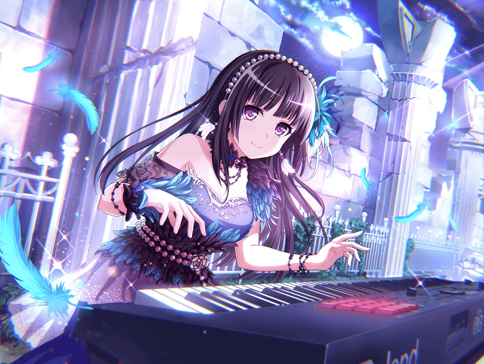

燐子
あ……{{userName}}さん……お、お疲れさま……です……
燐子
わたしは……練習が、終わったから……
みんなを待ってて……
燐子
この前の……ライブ……ですか……？
はい……。すごく……盛り上がっていました……
燐子
はい……特に……
ラストの曲がとても好評で……
燐子
わたしも……あの曲が……大好き……です……
初めて……聴いた時に……衝撃を受けて……
燐子
思わず……感じたまま……キーボードを弾いていました……
燐子
きっと……こういう感じって……
心が……震えて……イメージが、沸いて……
燐子
あこちゃんが……わたしの音に……
ドラムを……重ねて、くれて……
燐子
すごく……楽しかったです……
それで、これが……みんなとだったら……って……
思いました……
燐子
みんなとだったら……
きっと……もっと楽しくなるって……だから……絶対に……
みんなと……音を……重ねたい、って……思いました……
燐子
あの曲は……友希那さんの……お父さんの曲……
でも……友希那さんは……演るかとても迷っていたみたいで……
燐子
わたしは……あの曲をはじめて聴いたときから
きっと、友希那さんの歌声にあうだろうなって
思っていたんです……
燐子
だから、どうしても演奏したいと思って……
燐子
わたし……話すの……得意じゃないから……
いつもなら……あんなこと……しないのに…………
燐子
自分でも……どうしたんだろうって……驚きました……
燐子
だけど……どうしても……
友希那さんに……演りたいって……伝えたかったんです……
燐子
友希那さんの歌声で……あの曲を聴きたかったから
燐子
でも……友希那さん……
頷いては……くれなくて……
燐子
歌う資格がないと……そう言っていました……
燐子
お父さんの……曲を……演ること……
友希那さんに、とって……大きな覚悟が必要なこと
なんだろうと思いました
燐子
その気持ち……わたしには、少しだけわかります
燐子
Roseliaに入る……それがわたしにとって大きな決断であり、
覚悟、でしたから……
燐子
でも……Roseliaに入ってよかったと、思っています……
世界が、広がったような気がして……
燐子
大きな覚悟や、決断……。それは、その結果が
どんなものだろうと世界を変えます……
そして、世界を広げてくれます……
燐子
だからこそ……友希那さんがあの曲を演奏すると……
決めてくれたことが、とてもうれしかったんです……
燐子
きっと、友希那さんの歌声は、今以上に
もっともっと素敵なものになるだろうと……そんな気がして
燐子
練習中からもう……友希那さんの気迫、
すごかったんですよ……
燐子
わたしも……負けないようにって……
がんばって……たくさん……練習して……
燐子
みんなとも……たくさん……練習、して……
友希那さんを支えられたらって……
燐子
最初より、ずっと……いい演奏……
できるように……なって……
燐子
ライブは……大成功でした
燐子
はい……すごく……楽しかった……です……
燐子
みんなと……音を重ねられて……
本当に……嬉しかった……です…………
燐子
みんなと……わたしの、音……一体感を
感じられました……
燐子
友希那さんに……わたしの、思い……
伝えて……よかった……です……
燐子
勇気……出して、よかった……
燐子
昔のわたしなら、きっとあんなことしませんでした……
Roseliaに入って……
わたしも変わることができた……
燐子
きっと、もっと……キーボードもうまく
演奏できるようになる……そんな気がします……
燐子
はい……！
ありがとうございます
燐子
あ、あの……ほめてもらえて……うれしかったです……
これからもわたし……がんばります……！